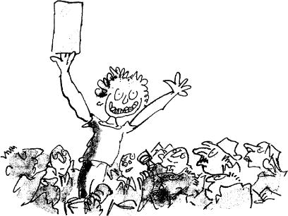
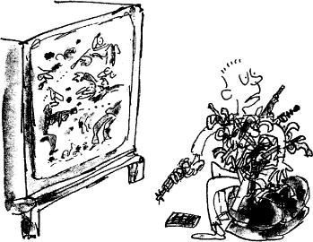

That evening, Mr Bucket’s newspaper announced the finding of not only the third Golden Ticket, but the fourth as well. TWO GOLDEN TICKETS FOUND TODAY, screamed the headlines. ONLY ONE MORE LEFT.
‘All right,’ said Grandpa Joe, when the whole family was gathered in the old people’s room after supper, ‘let’s hear who found them.’
‘The third ticket,’ read Mr Bucket, holding the newspaper up close to his face because his eyes were bad and he couldn’t afford glasses, ‘the third ticket was found by a Miss Violet Beauregarde. There was great excitement in the Beauregarde household when our reporter arrived to interview the lucky young lady – cameras were clicking and flashbulbs were flashing and people were pushing and jostling and trying to get a bit closer to the famous girl. And the famous girl was standing on a chair in the living room waving the Golden Ticket madly at arm’s length as though she were flagging a taxi. She was talking very fast and very loudly to everyone, but it was not easy to hear all that she said because she was chewing so ferociously upon a piece of gum at the same time.
‘“I’m a gum chewer, normally,” she shouted, “but when I heard about these ticket things of Mr Wonka’s, I gave up gum and started on chocolate bars in the hope of striking lucky. Now, of course, I’m back on gum. I just adore gum. I can’t do without it. I munch it all day long except for a few minutes at mealtimes when I take it out and stick it behind my ear for safekeeping. To tell you the truth, I simply wouldn’t feel comfortable if I didn’t have that little wedge of gum to chew on every moment of the day, I really wouldn’t. My mother says it’s not ladylike and it looks ugly to see a girl’s jaws going up and down like mine do all the time, but I don’t agree. And who’s she to criticize, anyway, because if you ask me, I’d say that her jaws are going up and down almost as much as mine are just from yelling at me every minute of the day.”
‘“Now, Violet,” Mrs Beauregarde said from a far corner of the room where she was standing on the piano to avoid being trampled by the mob.
‘“All right, Mother, keep your hair on!” Miss Beauregarde shouted. “And now,” she went on, turning to the reporters again, “it may interest you to know that this piece of gum I’m chewing right at this moment is one I’ve been working on for over three months solid. That’s a record, that is. It’s beaten the record held by my best friend, Miss Cornelia Prinzmetel. And was she furious! It’s my most treasured possession now, this piece of gum is. At night-time, I just stick it on the end of the bedpost, and it’s as good as ever in the mornings -a bit hard at first, maybe, but it soon softens up again after I’ve given it a few good chews. Before I started chewing for the world record, I used to change my piece of gum once a day. I used to do it in our lift on the way home from school. Why the lift? Because I liked sticking the gooey piece that I’d just finished with on to one of the control buttons. Then the next person who came along and pressed the button got my old gum on the end of his or her finger. Ha-ha! And what a racket they kicked up, some of them. You get the best results with women who have expensive gloves on. Oh yes, I’m thrilled to be going to Mr Wonka’s factory. And I understand that afterwards he’s going to give me enough gum to last me for the rest of my whole life. Whoopee! Hooray!” ’
‘Beastly girl,’ said Grandma Josephine.
‘Despicable!’ said Grandma Georgina. ‘She’ll come to a sticky end one day, chewing all that gum, you see if she doesn’t.’
‘And who got the fourth Golden Ticket?’ Charlie asked.
‘Now, let me see,’ said Mr Bucket, peering at the newspaper again. ‘Ah yes, here we are. The fourth Golden Ticket,’ he read, ‘was found by a boy called Mike Teavee.’
‘Another bad lot, I’ll be bound,’ muttered Grandma Josephine.
‘Don’t interrupt, Grandma,’ said Mrs Bucket.
‘The Teavee household,’ said Mr Bucket, going on with his reading, ‘was crammed, like all the others, with excited visitors when our reporter arrived, but young Mike Teavee, the lucky winner, seemed extremely annoyed by the whole business. “Can’t you fools see I’m watching television?” he said angrily. “I wish you wouldn’t interrupt!”
‘The nine-year-old boy was seated before an enormous television set, with his eyes glued to the screen, and he was watching a film in which one bunch of gangsters was shooting up another bunch of gangsters with machine guns. Mike Teavee himself had no less than eighteen toy pistols of various sizes hanging from belts around his body, and every now and again he would leap up into the air and fire off half a dozen rounds from one or another of these weapons.
‘“Quiet!” he shouted, when someone tried to ask him a question. “Didn’t I tell you not to interrupt! This show’s an absolute whiz-banger! It’s terrific! I watch it every day. I watch all of them every day, even the rotten ones, where there’s no shooting. I like the gangsters best. They’re terrific, those gangsters! Especially when they start pumping each other full of lead, or flashing the old stilettos, or giving each other the one-two-three with their knuckledusters! Gosh, what wouldn’t I give to be doing that myself! It’s the life, I tell you! It’s terrific!” ’
‘That’s quite enough!’ snapped Grandma Josephine. ‘I can’t bear to listen to it!’
‘Nor me,’ said Grandma Georgina. ‘Do all children behave like this nowadays – like these brats we’ve been hearing about?’
‘Of course not,’ said Mr Bucket, smiling at the old lady in the bed. ‘Some do, of course. In fact, quite a lot of them do. But not all.’
‘And now there’s only one ticket left!’ said Grandpa George.
‘Quite so,’ sniffed Grandma Georgina. ‘And just as sure as I’ll be having cabbage soup for supper tomorrow, that ticket’ll go to some nasty little beast who doesn’t deserve it!’